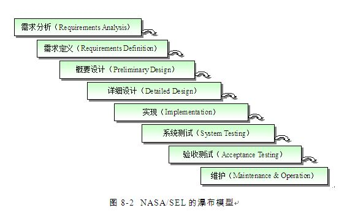
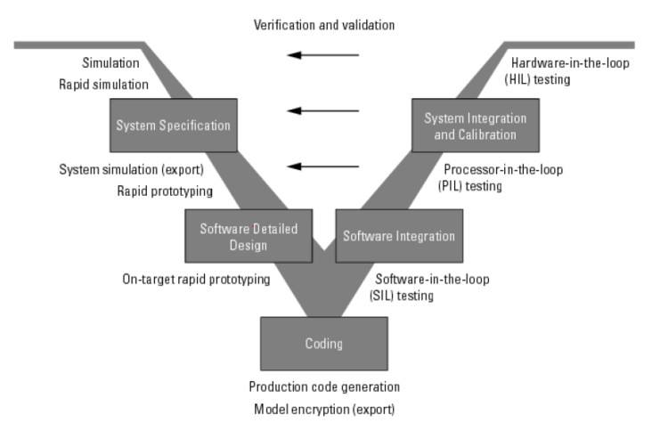
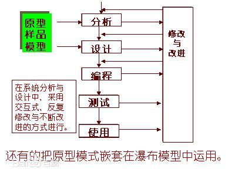
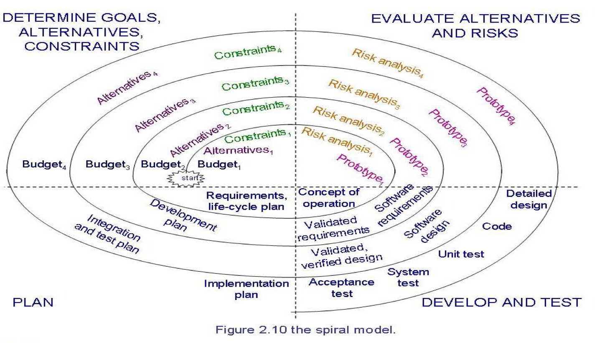

第二章：过程和生命周期
过程(process)的定义：
A Sequence Of Steps , In the Same Order each time.
模型(model)的定义：
Contain Key Process Features.
生命期(life cycle)的定义：
When the process involves the building of some PORDUCT.(We sometime refer to the process as a Life Cycle.)
四种（瀑布、V、原型、螺旋）模型的异同点
- 瀑布模型(Waterfall Model)

特点：
- One of the first process development models（第一个过程开发模型)
- Works for well understood problems with minimal or no changes in the requirements（适用于对问题有良好理解和基本不变的需求)
- Each major phase is marked by milestones and deliverables (每个主要阶段的里程碑和可交付成果)
缺点
- Provides no guidance how to handle changes to products and activities during development (assumes requirements can be frozen)(在开发过程没有提供应对产品需求变化的解决方案,简言之就是固定了需求)
- Views software development as manufacturing process rather than as creative process(将软件开发视为生产过程而不是创作过程)
- Long wait before a final product（开发周期长，开发过程中会产生大量文档)
2. V模型

特点：
- A variation of the waterfall model （瀑布模型的一种变体）
- Uses unit testing to verify procedural design(使用单元测试来验证程序的设计)
- Uses integration testing to verify architectural (system) design（使用集成测试验证架构(系统)设计)
3.原型模型(prototype)

特点：
- Allows repeated investigation of the requirements or design(支持可变的需求和设计，灵活性更强)
- Reduces risk and uncertainty in the development(在开发中降低风险和不确定性)
4.螺旋模型(spiral model)
特点：
- combines development activities with risk management to minimize the control risks.（结合开发进程和风险管理将风险控制在最小)
- The model is presented as a spiral in which each iteration is represented by a circuit around four major （一个螺旋的一次迭代主要由四步组成,如图)